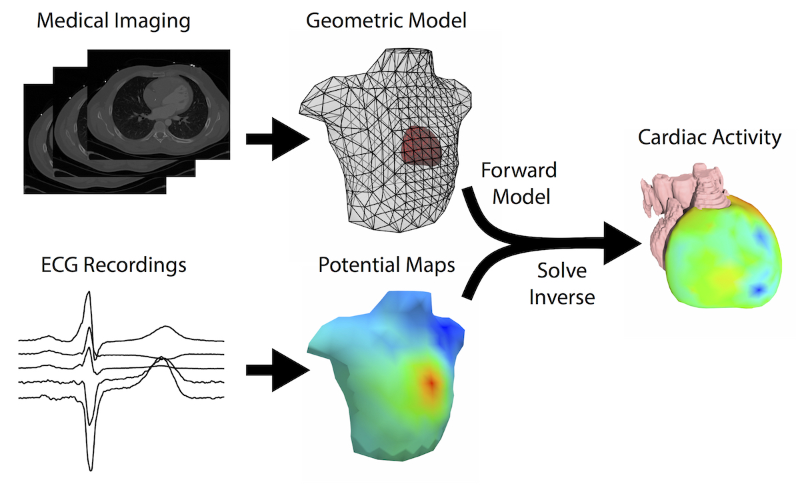
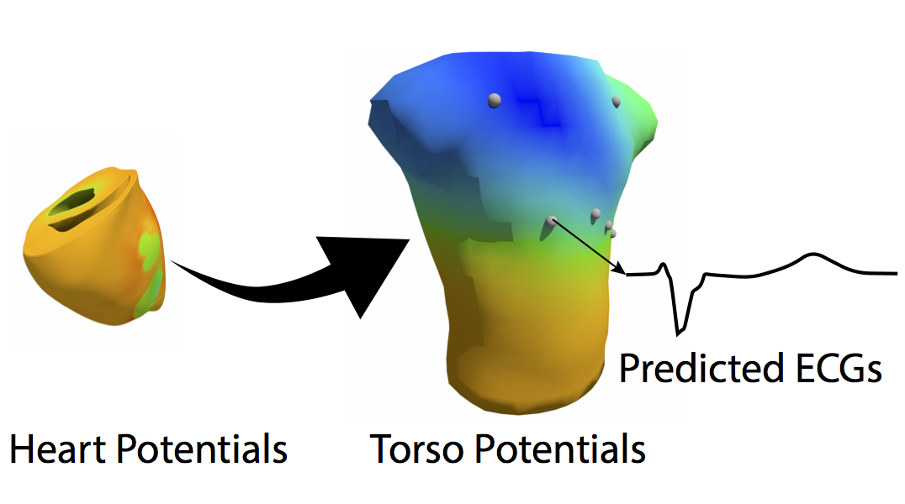
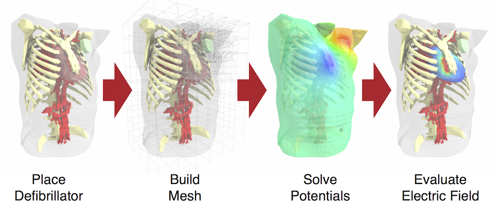

ECG Imaging
Electrocardiographic Imaging (ECGI) is a promising technology for diagnosing and treating cardiac arrhythmias. Its goal is to compute some formulation of cardiac sources from known patient torso geometry (typically extracted from medical imaging) and body-surface potential recordings. This computation is possible by first establishing a model of the ECG from knowledge of cardiac sources and geometry, known as a numerical forward simulation and then inverting this process to solve the associated inverse problem. I have therefore focused on improving the ECG forward simulation pipeline through validation and analysis of the various stages of the pipeline.
{kind=link}
As part of my research in ECGI, I am also involved in furthring the efforts of the Consortium for ECG Imaging (CEI). Our efforts within the CEI include the formation of workgroups to address specific technical challenges with collaborative efforts and the formation of the EDGAR database, which is a collection of dataset meant to facilate validtation and comparison of ECGI techniques.
ECG Forward Simulation
ECGI relies on the inversion of a well formulated ECG forward simulation. Therefore, improving ECG forward simulations can improve ECGI and arrhythmia treatments that it guides. Well validated ECG forward simulations remain suprisingly ellusive, necessitating a renewed effort to perform effective animal experiments that can validate the ECG forward simulations used in ECGI. Additionally, my research has also used ECG forward simulations to predict ECG recordings at non-standard locations, such as within the torso.
{kind=link}
Defibrillation Simulation
Defibrillation is a life saving technology that is used to treat fatal arrhythmias. We have developed a patient-specific pipeline that can predict the defibrillation threshold (DFT) for various device configurations. This tool can be used to guide defibrillation therapy strategies, for example, predicting the optimal implantable cardioverter defibrillator (ICD) placement for for patients with abnormal cardiac geometries. My research efforts and developments have been directed toward validating the simulation pipeline with clinical and animal experiments.
{kind=link}